Introduction
Me and Chris (my assessor) discussed together on the game industry and what I want to become. I want to give 3D modelling a go, like actually being serious this time. But, I don't know where to start. Chris told me that between 27th April to 3rd May is a holiday, and since I like mech stuff, why not try modeling a mech? According to Chris, a strong portfolio requires PBR assets that have gone through the entire pipeline in Game Development:
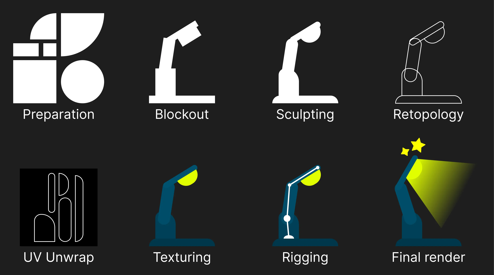
That is the plan, I will try to model, texture and rig a robot during the holiday!
An additional challenge for me is to model a low-poly mesh, the reason why is low-poly is actually harder
than high-poly models. We can add extra details easily to an object, but having a limit on the polygon
count, that is hard! How I would add details, without adding extra polygons?
Another extra challenge is animation, but I don't want to go for that route just yet.
Preparation
To start of, I need to know what I want to model. Chris gave me some suggestions before the holiday, like study from "Zone of the Enders":
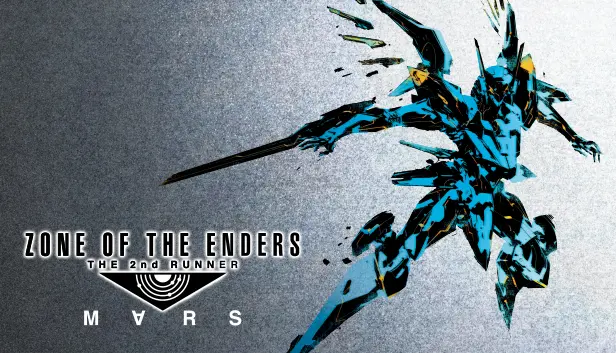
I also like Bakugan and it's mech style, and I also like Zoids models too. Unfortunately, I cannot stay in
this session for too long, so a decision has to be made.
So I picked Zoids as the main mech. I started gathering references from 3 mechs that I like:
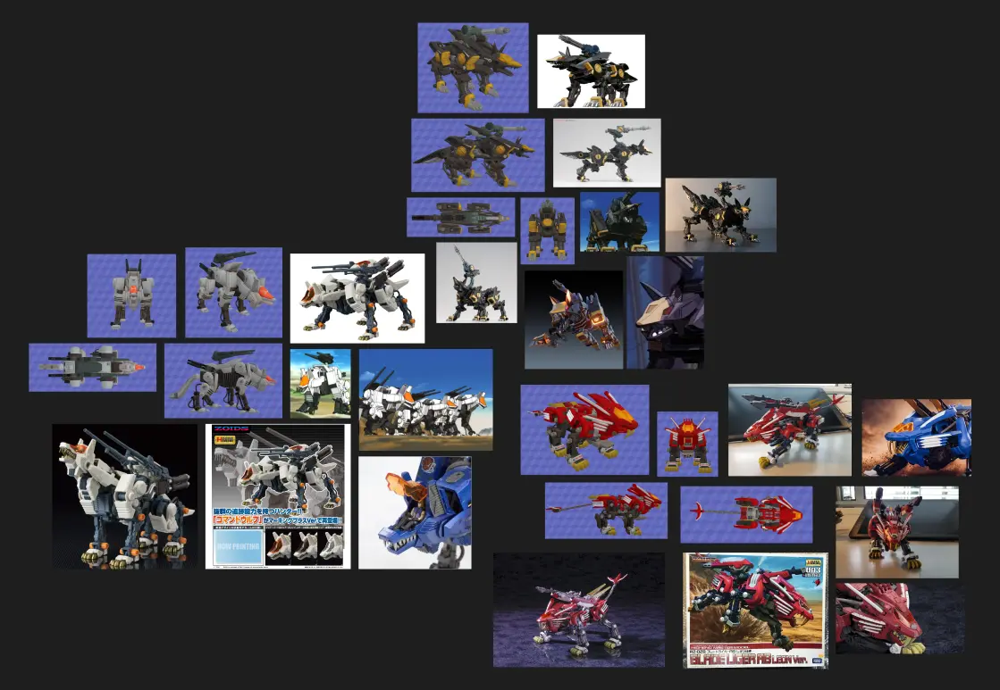
I also gather other form of media, and put them in a moodboard, as it helps me to inspired and evoke a feeling so that I know what to do now!
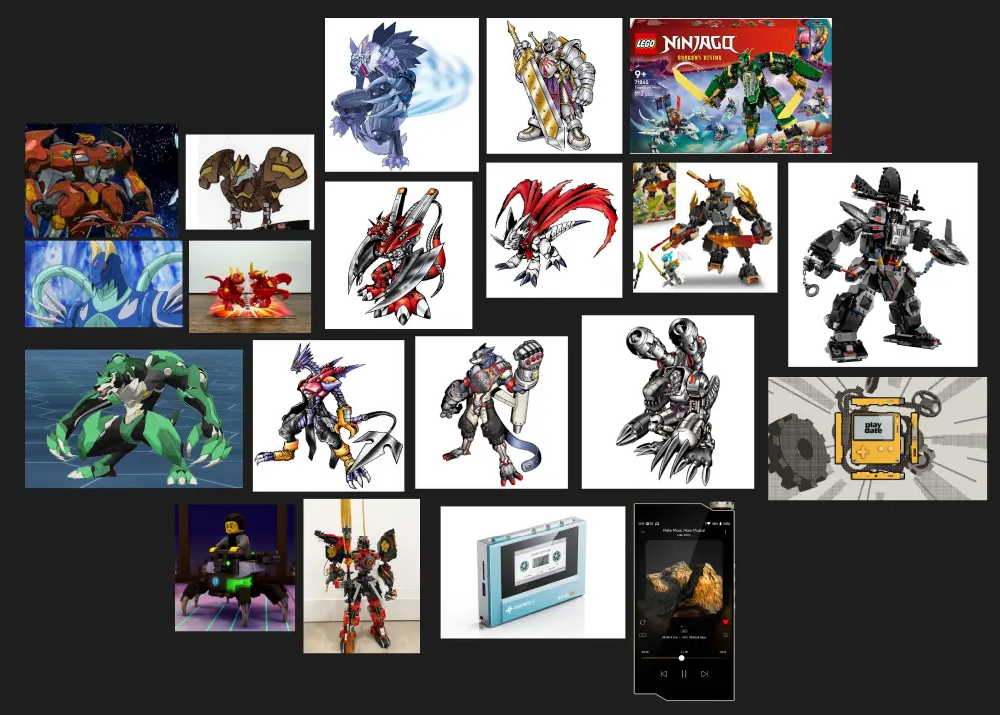
Blockout
I decided to go for Command Wolf as the main mech I want to model.
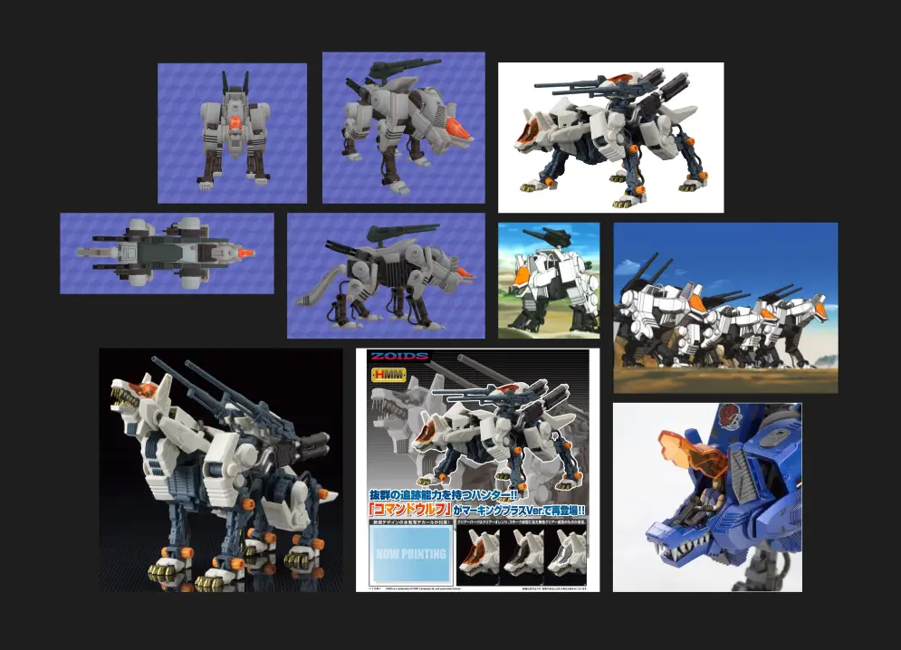
To start with the right scale, I added a Mixamo character, Y Bot, in
my Blender scene as a size reference Then I used The Models
Resources, get the model and screenshot the Side, Top and Front. I also scale it so it makes sense
with the Mixamo character.
Now, The model itself does look overwhelming, but to simplified, most of the objects here are
mirrored. I can use a Mirror Modifier to help with the Blockout process. And this is the
result of the blockout:
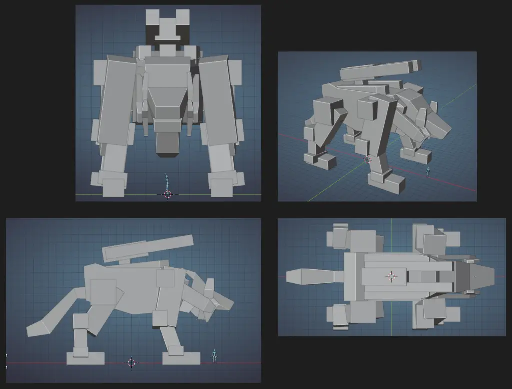
Before going straight to modelling, I want to ask for feedback on the current blockout so far, and these are my responses:
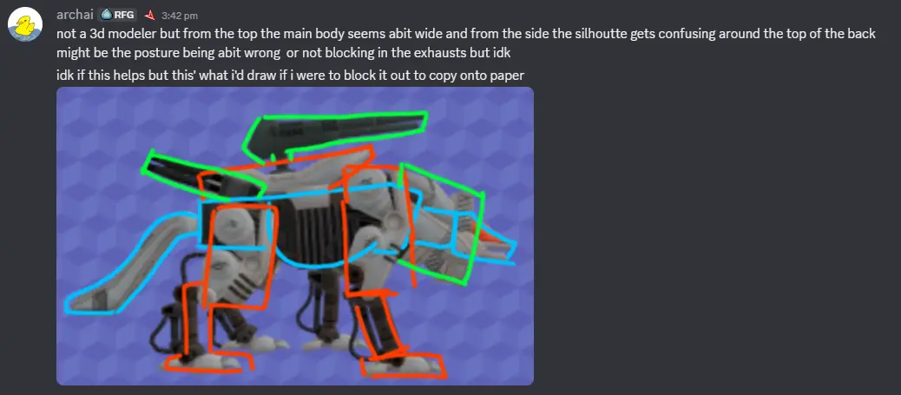
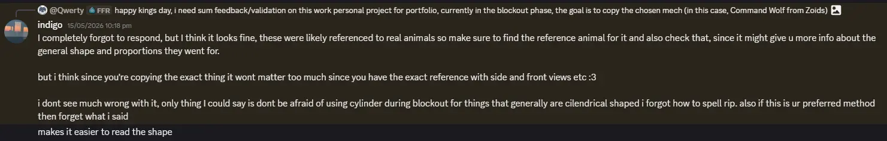
I also asked other users that aren't in the art/game-related fields (music producers, gamers, students,
etc...), but it was hard for them to give me constructive feedback. But, on a positive note, they liked the
blockout so far, and they can't wait for the final model!
Additional note from the mech's head:
I found it confusing, I don't understand why the head is too small, and I also don't understand how it
works. I looked back at the original model, and I found out that there are roughly 2 main parts. But in
terms of movements, I found out the head can only move up and down, not left and right. So, my
assumption is that the torso can be flexible like this part highlighted below, where it acts like an
accordion:
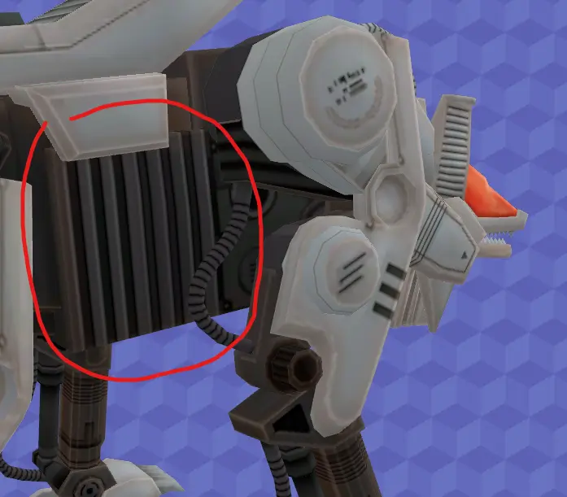
I do know that assumption isn't the greatest way to validate, so to know how this mech works, I looked up the anime itself where Command Wolf is presents, aaaand as you can see:
I found out that the mech's head can only rotate up and down, the reason why it can look left and right
is based on it's posture, or leg rotations!
I will keep this in mind while modelling the mech.
Modelling
This is a solid mesh, not an organic-like mesh, so I can use hard surface modelling techniques. I
have tried this method before by modelling guns for a VR game during my internship, so this should be not so
complicated. I also need to think about the polygon counts too.
I applied the feedback I got to my model first, and then start modelling. I also use Mirror Modifier
to make the process easier.
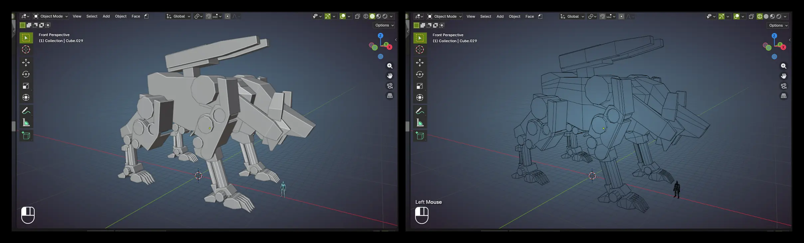
The torso seems to be the most complicated one, so I had to download the main model for comparison. I separated the main model by loose parts, and I found out the torso consist of 2-3 main parts. There are also "clamping" parts too, which I didn't know about it before.
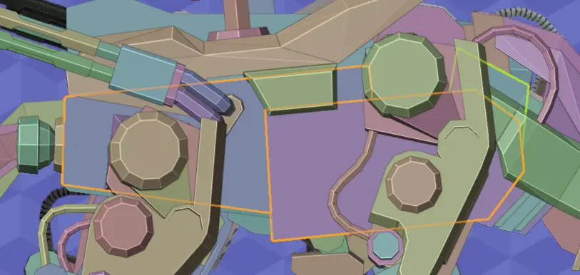
As for the teeth, it is not too hard, but I had to adjust the bottom jaw to be smaller than the top area, so that the front teeth can be shown more. For the tubes, I can use Curve Object, and that should be it!
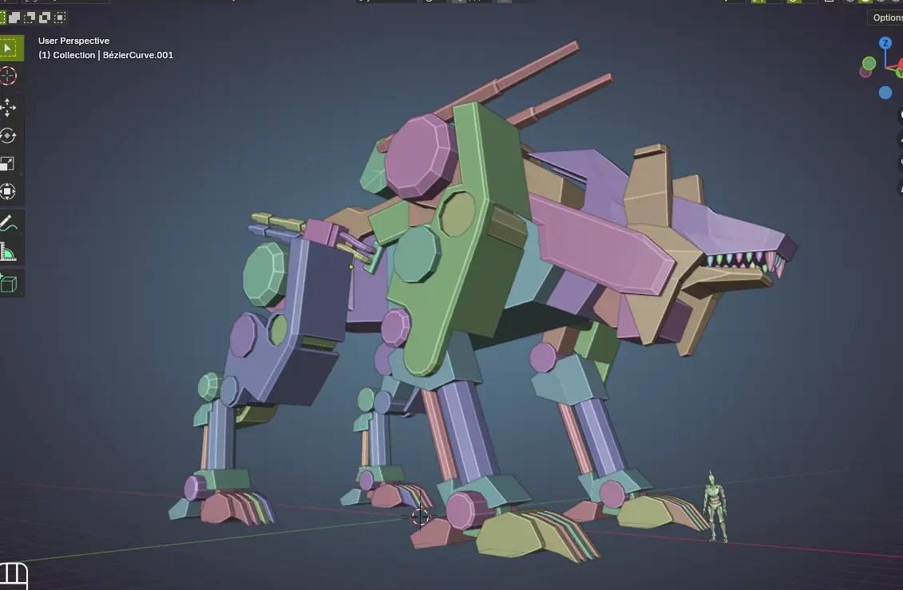
Texturing
I need to decide on texturing, but I want to make this quick and also not too "cheap". I did learned about
"Gradient texturing" but never tried to implement them, so I could give that a go as my main way on
texturing!
First off, I want to do a solid color texturing just for better visualization on what I should color. Then,
a quick research on the internet and I found 2 resources, one is a document
on gradient texturing, and also a video
showing how to do it. For getting the texture atlas, I found this free gradient color palette I can start
with!
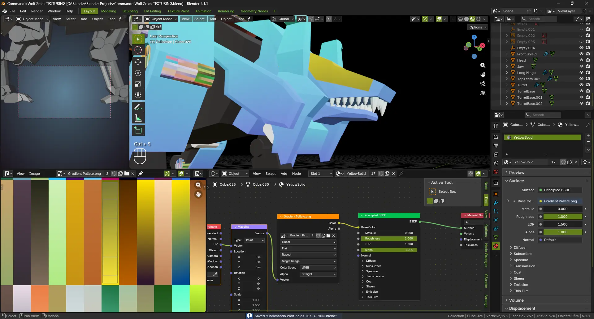
And after texturing, this is the result:
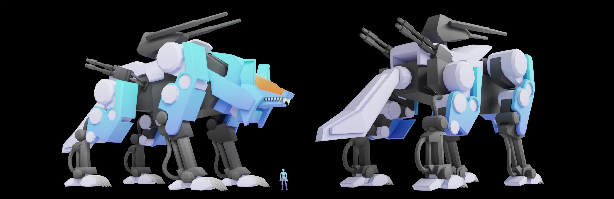
Additional small patches include adding pipes for the legs, and fixed the topology for the ears, just a teeny bit.
Rigging
Man made horror beyond my comprehension, rigging is HARD.
I'm glad that I found this amazing video from
Doodley tho, he explained rigging for casual people who aren't in the 3D fields. This video alone
helped me a lot on understanding how complex rigs in animated movies and video games work! I also found a video on rigging in practice using Blender,
learning the theory first helped with understanding the video too! Based on the video, I used Rigid
Rigging method from Joey for my mech. It's a robot, not an organic character, therefore there's no
need in weight painting.
I started with the torso first, and then the right side of the mech. Then, I applied the symmetry function
from the right to the left and this is what I got!
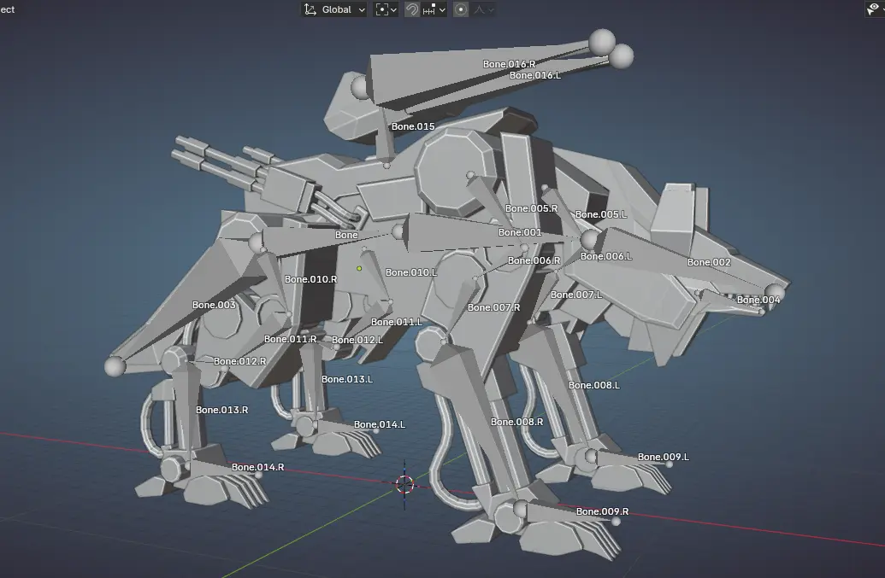
I use Parent to Bone method, apply this to all parts of the model, and done. Let's do a posing test.
To test on the rig's usability, I made a new Blender file to create a render to test on the model by
giving it a pose to the camera:
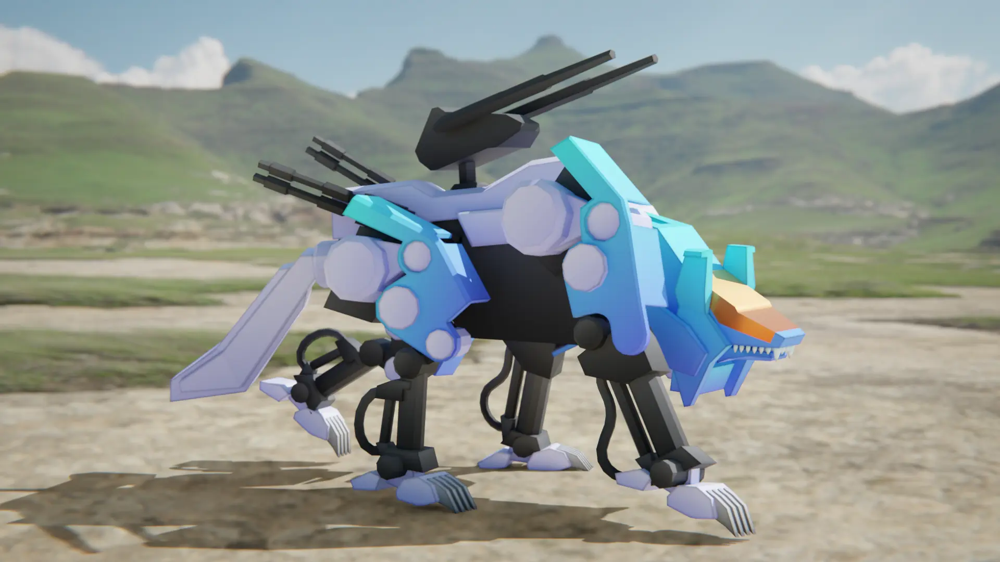
This made me learned that posing by adjusting individual bone is not worth the experience. I also
found a lot of logic error of the model, especially on how the joint works! When I do posing, I need to
think about the readability of the pose. Just like in previous semester of Game Design, I can check if it's
readable by making it into a silhouette.
Another way to have better readability, according to my assessor and my friend, is to play around with
colors and think about the Negative Space, which that's very interesting.
Either way, to solve the issue where the animator needs to control individual bones, I need to implement a
Control system.
Controls
So, my goal is to make the rig artist-friendly, if I send this to an artist, they should know how to
use the rig by interacting around.
Controlling each bone is already a hassle and annoying, a solution I can go for is adding IK to the
legs! I learned this from a video that explains on how
to make a rig and also adding controls! And this is the results of me adding IK:
With a help from Josh (my second assessor, he's really good at Blender), and this video of Polyfjord rigging and animating a creature, I learned about bone constraints which can be useful for turret movement. I want the base of the turret to move in Yaw rotation, and the gun move in Pitch rotation. Damped Track with Limit Rotation helps with this mechanic... sort of.
Just like the previous, I want to try this new rig to see if I can pose better and easier. And good news! It is MUCH easier to pose with this set up now, I created this pose in less than 15 minutes, while for the previous pose took me an hour.
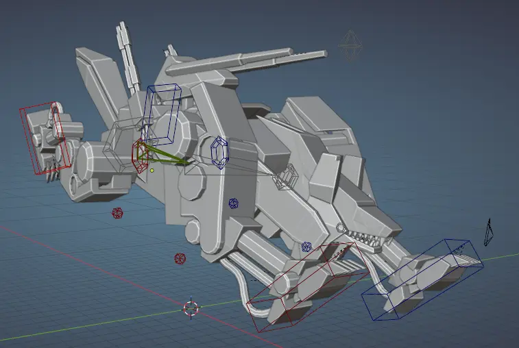
Time to move on to the last stage, which is...
Animating
I animate humanoid before in Roblox Studio, but I never animate a quadruple before, nor
animate using controls. It is best to get some references.
This is a wolf, so how does a dog/wolf run?
Based on this video on how to animate an animal run
cycle, I learned that there are 5-6 main stage of the animation.
Contact, or Extension: Front legs stretched forward, back legs stretched backward. Body is fully
extended.
Going down: The front legs begin absorbing impact. Spine compresses slightly downward.
Passing: Back legs move under the body. Front legs pull backward. Body starts lifting again.
Full contraction: All legs tucked closer beneath the body. Apparently this is the “coiled spring”
pose, the back legs about to touch the ground.
Leap: The wolf fully off the ground. Spine extends again. Front legs reaching forward/backward, while
the back legs pushing up.
Firstly, I created the main keyframes, and it looks like this:
Then I contract all keyframes, so that the movement can be a bit faster. I also add additional small
animation for the exhaust, and making the head stabilized. While animating I asked my assessors for feedback
so I can do iterations.
To make the animation more natural, I apply "noise" to the keyframes, by giving individual keys an offset:
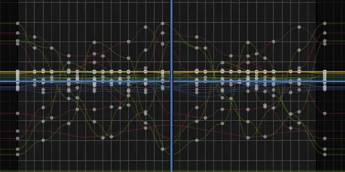
With a bunch of tweaks and small patches, this is the final animation!
Iteration
For the texture, I gathered lots of feedback, to which the majority going for the warm color. But in the end, it's about the context.
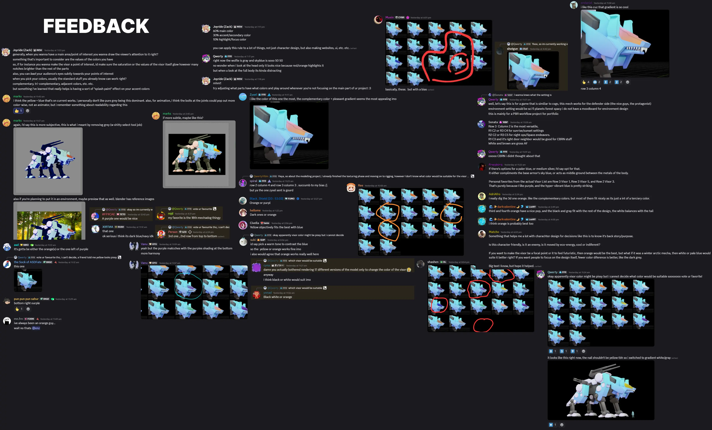
Based on these feedback, I iterated the coloring a bit so it follows the 60/30/10 rule, suggested by
my assessor. I even attempted to try Non-Photorealism-Render style suggested by Josh using Grease
Pencil.
Using shader graph, and new colors, this is the result:
Environment
Right now the wolf is running in a void, I want to add some environments. Not only to have something
interesting in the background instead of a solid color, but to give a sense of scale. I can use the
environment to show how big the wolf is!
Since this is out of my scope, I will not model the environments. Instead, I will use Kenney's free assets available to use.
The environment must move from right to left. I have combined all assets I have placed, into one object
where I can animate it.
But why not using Empty?
That was my first initial step! To parent everything inside an empty and then use an array modify.
Unfortunately, Array modifier does not work with Empty, so this is my plan B.
Despite that the background will move quite fast, I still make sure the environment has the same shader
style as the wolf, using NPR, Posterizing, and Grease Pencil. I am not sure if this necessary or not,
so this is just for the sake of consistency.
For the sky, I can't use a realistic skybox. I will keep the lighting but change the sky, by implementing a flat plane, now it looks like this:
Motion Blur
I want to experiment with motion blur, it's a cool way to create some energy and speed. Luckily this is
EEVEE, so I can quickly test out how motion blur would look like! I found out about this Selective Blur plugin, a plugin that
helps with motion blur but with a pass. Basically, I can make the robot wolf have no motion blur, while the
background is.
This helps the movement of the wolf to be more clear! The downside of this, is the render time will cost at
least 7 minutes, not a big deal, just something I would like to mention.
And, this is the final result and the final product! Drum roll pleaaaase:
Reflection
I like how this is supposed to be a one-week project, but it leads to a one-month project.
This is by far the biggest personal project I have ever done and documented! I want to add some more for
this project, but definitely not now due to time constraints, so my journey ends here. I found modelling and animating quite relaxing, while creating the rig and texturing feels boring and mundane for me. You had to start rigging first before animating anyways, so hard work pays off! I learned a lot on this personal project, this really helps me to find something I like after using Blender for so long. This project helps me to decide that I want to become a 3D artist and I want to model more characters in the future, maybe during summer break or during the game production semester.
Thanks Chris for an amazing personal project!